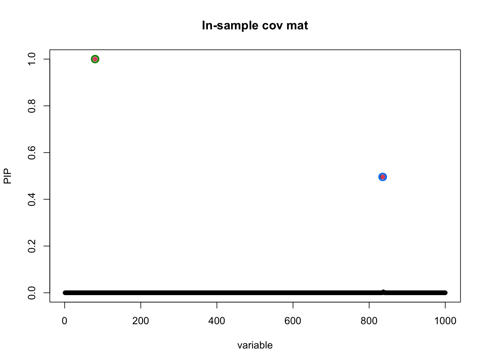
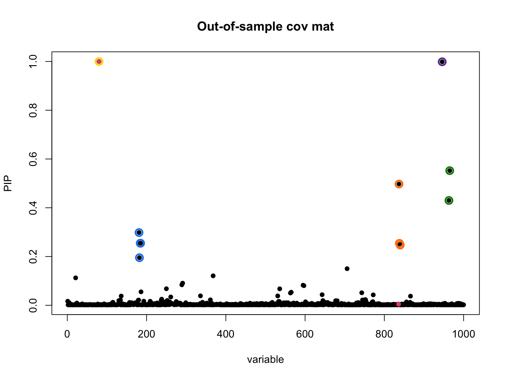
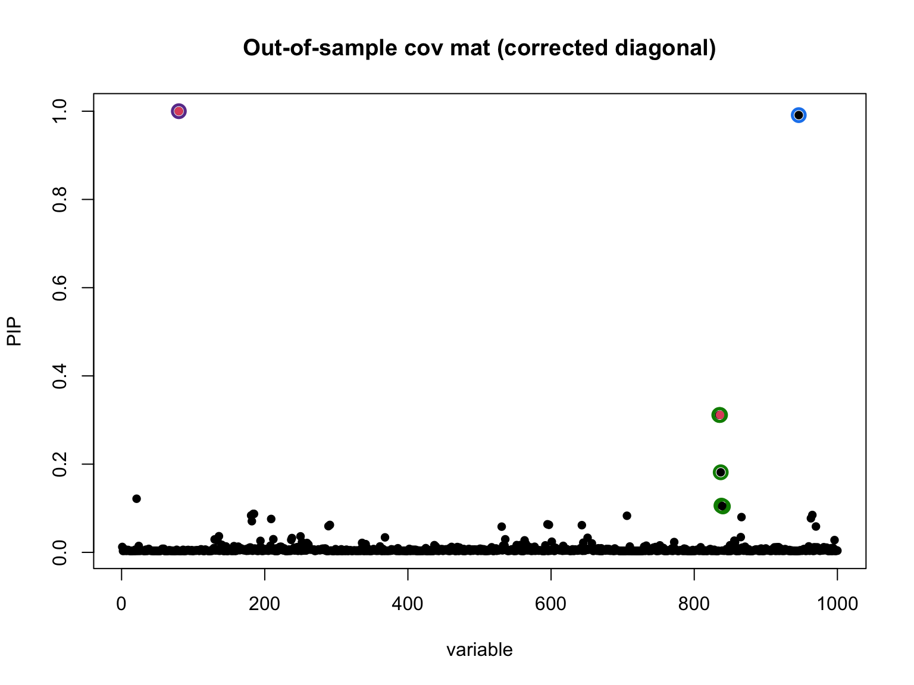

Test new grid-based optimization for nu_0
Dat Do
2026-06-15
Last updated: 2026-06-15
Checks: 7 0
Knit directory: susie_love_experiments/
This reproducible R Markdown analysis was created with workflowr (version 1.7.1). The Checks tab describes the reproducibility checks that were applied when the results were created. The Past versions tab lists the development history.
Great! Since the R Markdown file has been committed to the Git repository, you know the exact version of the code that produced these results.
Great job! The global environment was empty. Objects defined in the global environment can affect the analysis in your R Markdown file in unknown ways. For reproduciblity it’s best to always run the code in an empty environment.
The command set.seed(20260419) was run prior to running
the code in the R Markdown file. Setting a seed ensures that any results
that rely on randomness, e.g. subsampling or permutations, are
reproducible.
Great job! Recording the operating system, R version, and package versions is critical for reproducibility.
Nice! There were no cached chunks for this analysis, so you can be confident that you successfully produced the results during this run.
Great job! Using relative paths to the files within your workflowr project makes it easier to run your code on other machines.
Great! You are using Git for version control. Tracking code development and connecting the code version to the results is critical for reproducibility.
The results in this page were generated with repository version f4439db. See the Past versions tab to see a history of the changes made to the R Markdown and HTML files.
Note that you need to be careful to ensure that all relevant files for
the analysis have been committed to Git prior to generating the results
(you can use wflow_publish or
wflow_git_commit). workflowr only checks the R Markdown
file, but you know if there are other scripts or data files that it
depends on. Below is the status of the Git repository when the results
were generated:
Ignored files:
Ignored: .DS_Store
Ignored: .Rproj.user/
Ignored: analysis/.DS_Store
Untracked files:
Untracked: analysis/mismatch_fix_delta_approach.Rmd
Unstaged changes:
Modified: analysis/algorithmic-approach.Rmd
Modified: analysis/small_nu.Rmd
Note that any generated files, e.g. HTML, png, CSS, etc., are not included in this status report because it is ok for generated content to have uncommitted changes.
These are the previous versions of the repository in which changes were
made to the R Markdown
(analysis/test-new-optimization-delta-ver.Rmd) and HTML
(docs/test-new-optimization-delta-ver.html) files. If
you’ve configured a remote Git repository (see
?wflow_git_remote), click on the hyperlinks in the table
below to view the files as they were in that past version.
| File | Version | Author | Date | Message |
|---|---|---|---|---|
| Rmd | f4439db | dodat-stats | 2026-06-15 | updated plots |
| html | 795c7f6 | dodat-stats | 2026-06-15 | Build site. |
| Rmd | 163ad86 | dodat-stats | 2026-06-15 | added new file: optimizing nu0 using grid search |
0. Aim
Here we aim to still learn \(\nu_0\) using VEB while fixing \(\delta\) (i.e., $ = 1$). This is arguably the most principal approach, although the convergence of \(\nu_0\) is poorly (it rarely moves away from the intitial point). Therefore, in this workflowr, we seek alternative optimization approach.
Since optimizing \(\nu_0\) is only a
1D optimization problem, I plan to find it using a grid of \(\nu_0\). But a grid of 10 values of \(\nu_0\) would lead to an optimization
problem that is 10 times slower than susie-love-lambda.
After working with Claude, we decided the best solution is:
For each \(\nu_0\) in the grid, fix \(\nu_0\) (turn
estimate_nu_0toFALSE) and run the optimization of other parameters in 10 iterations.Choose the best \(\nu_0\) and call it the warm start for learning the optimal \(\nu_0\)
Start optimizing everything from this \(\nu_0\) (turn
estimate_nu_0toTRUE).
So the total cost is only 10 (grid points) x 10 (iterations) + number of iterations in step 3. Not too bad. Let’s see how it work in the low mismatch scenario.
One more update is we changed the optimization of nu_0 and nu_q to log-scale. It works slightly better.
1. Simulate data from a coalescent model
library(susielove)
seed <- 1
T_split <- 25
chrom <- "chr22"
start <- 20e6
end <- 21e6
N <- 25000L
N0 <- 200L
J <- 1000L
h2 <- 0.01
res <- sim_2pop(chrom, start, end,
T_split = T_split,
n_gwas = N,
n_ref = N0,
J = J,
h2 = h2,
seed = seed)
v <- res$v
R <- res$R
R0 <- res$R0
beta_true <- res$beta_true
causal_SNPs_loc <- res$causal_SNPs_loc
plot(v, pch = 16)
points(causal_SNPs_loc, v[causal_SNPs_loc], pch = 16, col = "red")
| Version | Author | Date |
|---|---|---|
| 795c7f6 | dodat-stats | 2026-06-15 |
2. Try fitting susieR with in-sample and out-of-sample covariance matrices
library(susieR)
#> Warning: package 'susieR' was built under R version 4.3.3
fit <- susie_suff_stat(
XtX = N * R,
Xty = N * v,
n = N,
yty = N
)
susie_plot(fit, y = "PIP", b = beta_true, main = "In-sample cov mat")
library(susieR)
fit_R0 <- susie_suff_stat(
XtX = N * R0,
Xty = N * v,
n = N,
yty = N
)
susie_plot(fit_R0, y = "PIP", b = beta_true, main = "Out-of-sample cov mat")
d0_inv_sqrt <- 1 / sqrt(diag(R0))
LD0 <- diag(d0_inv_sqrt) %*% R0 %*% diag(d0_inv_sqrt)
d_sqrt <- sqrt(diag(R))
R_tilde <- diag(d_sqrt) %*% LD0 %*% diag(d_sqrt)
fit <- susie_suff_stat(
XtX = N * R_tilde,
Xty = N * v,
n = N,
yty = N
)
susie_plot(fit, y = "PIP", b = beta_true, main = "Out-of-sample cov mat (corrected diagonal)")
3. Fit susie_XL with new log-space optimization (nu_0_init = 1000)
d0_inv_sqrt <- 1 / sqrt(diag(R0))
LD0 <- diag(d0_inv_sqrt) %*% R0 %*% diag(d0_inv_sqrt)
d_sqrt <- sqrt(diag(R))
R_tilde <- diag(d_sqrt) %*% LD0 %*% diag(d_sqrt)
diag_R <- diag(R)
R_out <- R_tilde
k <- min(N0, J)
delta <- 1nu_0_init <- 1000
max_iter <- 100
XL_res_1000 <- susie_XL(v, R_out, diag_R,
delta,
N, L = 5,
k,
nu_0_init = nu_0_init,
max_iter_init = 100,
step_susie = 20,
step_R = 100,
estimate_nu_0 = TRUE,
estimate_delta = FALSE,
max_iter = max_iter,
tol = 1e-4)
#> Iter 1 | Loss: -2.0173 | nu_q: 1002.4 | nu_0: 992.8 | delta: 1.0000e+00
#> Iter 2 | Loss: -2.0282 | nu_q: 1001.8 | nu_0: 989.1 | delta: 1.0000e+00
#> Iter 3 | Loss: -2.0321 | nu_q: 1000.1 | nu_0: 986.6 | delta: 1.0000e+00
#> Iter 4 | Loss: -2.0352 | nu_q: 998.2 | nu_0: 984.6 | delta: 1.0000e+00
#> Iter 5 | Loss: -2.0384 | nu_q: 996.2 | nu_0: 982.5 | delta: 1.0000e+00
#> Iter 6 | Loss: -2.0413 | nu_q: 994.2 | nu_0: 980.7 | delta: 1.0000e+00
#> Iter 7 | Loss: -2.0444 | nu_q: 992.3 | nu_0: 978.7 | delta: 1.0000e+00
#> Iter 8 | Loss: -2.0473 | nu_q: 990.4 | nu_0: 976.8 | delta: 1.0000e+00
#> Iter 9 | Loss: -2.0503 | nu_q: 988.5 | nu_0: 974.8 | delta: 1.0000e+00
#> Iter 10 | Loss: -2.0534 | nu_q: 986.4 | nu_0: 972.9 | delta: 1.0000e+00
#> Iter 11 | Loss: -2.0561 | nu_q: 984.6 | nu_0: 971.0 | delta: 1.0000e+00
#> Iter 12 | Loss: -2.0593 | nu_q: 982.5 | nu_0: 969.1 | delta: 1.0000e+00
#> Iter 13 | Loss: -2.0621 | nu_q: 980.7 | nu_0: 967.2 | delta: 1.0000e+00
#> Iter 14 | Loss: -2.0649 | nu_q: 978.9 | nu_0: 965.4 | delta: 1.0000e+00
#> Iter 15 | Loss: -2.0674 | nu_q: 977.3 | nu_0: 963.7 | delta: 1.0000e+00
#> Iter 16 | Loss: -2.0704 | nu_q: 975.3 | nu_0: 961.8 | delta: 1.0000e+00
#> Iter 17 | Loss: -2.0733 | nu_q: 973.4 | nu_0: 959.9 | delta: 1.0000e+00
#> Iter 18 | Loss: -2.0763 | nu_q: 971.4 | nu_0: 958.0 | delta: 1.0000e+00
#> Iter 19 | Loss: -2.0790 | nu_q: 969.7 | nu_0: 956.2 | delta: 1.0000e+00
#> Iter 20 | Loss: -2.0819 | nu_q: 967.8 | nu_0: 954.3 | delta: 1.0000e+00
#> Iter 21 | Loss: -2.0847 | nu_q: 965.9 | nu_0: 952.5 | delta: 1.0000e+00
#> Iter 22 | Loss: -2.0874 | nu_q: 964.1 | nu_0: 950.7 | delta: 1.0000e+00
#> Iter 23 | Loss: -2.0901 | nu_q: 962.3 | nu_0: 948.9 | delta: 1.0000e+00
#> Iter 24 | Loss: -2.0930 | nu_q: 960.4 | nu_0: 947.1 | delta: 1.0000e+00
#> Iter 25 | Loss: -2.0957 | nu_q: 958.6 | nu_0: 945.2 | delta: 1.0000e+00
#> Iter 26 | Loss: -2.0984 | nu_q: 956.8 | nu_0: 943.5 | delta: 1.0000e+00
#> Iter 27 | Loss: -2.1006 | nu_q: 955.3 | nu_0: 941.9 | delta: 1.0000e+00
#> Iter 28 | Loss: -2.1033 | nu_q: 953.6 | nu_0: 940.2 | delta: 1.0000e+00
#> Iter 29 | Loss: -2.1061 | nu_q: 951.7 | nu_0: 938.4 | delta: 1.0000e+00
#> Iter 30 | Loss: -2.1087 | nu_q: 949.9 | nu_0: 936.7 | delta: 1.0000e+00
#> Iter 31 | Loss: -2.1113 | nu_q: 948.2 | nu_0: 934.9 | delta: 1.0000e+00
#> Iter 32 | Loss: -2.1140 | nu_q: 946.4 | nu_0: 933.2 | delta: 1.0000e+00
#> Iter 33 | Loss: -2.1165 | nu_q: 944.7 | nu_0: 931.5 | delta: 1.0000e+00
#> Iter 34 | Loss: -2.1191 | nu_q: 943.0 | nu_0: 929.8 | delta: 1.0000e+00
#> Iter 35 | Loss: -2.1217 | nu_q: 941.2 | nu_0: 928.0 | delta: 1.0000e+00
#> Iter 36 | Loss: -2.1243 | nu_q: 939.5 | nu_0: 926.3 | delta: 1.0000e+00
#> Iter 37 | Loss: -2.1270 | nu_q: 937.7 | nu_0: 924.5 | delta: 1.0000e+00
#> Iter 38 | Loss: -2.1295 | nu_q: 935.9 | nu_0: 922.8 | delta: 1.0000e+00
#> Iter 39 | Loss: -2.1321 | nu_q: 934.2 | nu_0: 921.1 | delta: 1.0000e+00
#> Iter 40 | Loss: -2.1347 | nu_q: 932.5 | nu_0: 919.4 | delta: 1.0000e+00
#> Iter 41 | Loss: -2.1371 | nu_q: 930.9 | nu_0: 917.8 | delta: 1.0000e+00
#> Iter 42 | Loss: -2.1395 | nu_q: 929.2 | nu_0: 916.2 | delta: 1.0000e+00
#> Iter 43 | Loss: -2.1415 | nu_q: 927.9 | nu_0: 914.8 | delta: 1.0000e+00
#> Iter 44 | Loss: -2.1439 | nu_q: 926.3 | nu_0: 913.2 | delta: 1.0000e+00
#> Iter 45 | Loss: -2.1465 | nu_q: 924.5 | nu_0: 911.5 | delta: 1.0000e+00
#> Iter 46 | Loss: -2.1489 | nu_q: 922.8 | nu_0: 909.9 | delta: 1.0000e+00
#> Iter 47 | Loss: -2.1490 | nu_q: 923.0 | nu_0: 909.8 | delta: 1.0000e+00
#> Converged at iteration 47
b_res <- XL_res_1000$b_res
R_q <- XL_res_1000$R_q
susie_plot_alpha(
alpha = b_res$alpha,
R = cov2cor(R_q),
b = beta_true,
main = paste0("SuSiE-XL (nu_0_init=1000) | nu_0=",
round(XL_res_1000$nu_0, 1),
" | nu_q=", round(XL_res_1000$nu_q, 1))
)
| Version | Author | Date |
|---|---|---|
| 795c7f6 | dodat-stats | 2026-06-15 |
4. Fit susie_XL with new log-space optimization (nu_0_init = 100)
nu_0_init <- 100
max_iter <- 100
XL_res_100 <- susie_XL(v, R_out, diag_R,
delta,
N, L = 5,
k,
nu_0_init = nu_0_init,
max_iter_init = 500,
step_susie = 20,
step_R = 100,
estimate_nu_0 = TRUE,
estimate_delta = FALSE,
max_iter = max_iter,
tol = 1e-4)
#> Iter 1 | Loss: -1.9933 | nu_q: 100.5 | nu_0: 99.2 | delta: 1.0000e+00
#> Iter 2 | Loss: -2.0389 | nu_q: 100.9 | nu_0: 98.8 | delta: 1.0000e+00
#> Iter 3 | Loss: -2.0453 | nu_q: 101.2 | nu_0: 98.7 | delta: 1.0000e+00
#> Iter 4 | Loss: -2.0497 | nu_q: 101.5 | nu_0: 98.7 | delta: 1.0000e+00
#> Iter 5 | Loss: -2.0529 | nu_q: 101.7 | nu_0: 98.8 | delta: 1.0000e+00
#> Iter 6 | Loss: -2.0556 | nu_q: 102.0 | nu_0: 98.9 | delta: 1.0000e+00
#> Iter 7 | Loss: -2.0584 | nu_q: 102.2 | nu_0: 99.1 | delta: 1.0000e+00
#> Iter 8 | Loss: -2.0610 | nu_q: 102.5 | nu_0: 99.3 | delta: 1.0000e+00
#> Iter 9 | Loss: -2.0634 | nu_q: 102.7 | nu_0: 99.5 | delta: 1.0000e+00
#> Iter 10 | Loss: -2.0658 | nu_q: 102.9 | nu_0: 99.7 | delta: 1.0000e+00
#> Iter 11 | Loss: -2.0683 | nu_q: 103.1 | nu_0: 99.9 | delta: 1.0000e+00
#> Iter 12 | Loss: -2.0707 | nu_q: 103.4 | nu_0: 100.1 | delta: 1.0000e+00
#> Iter 13 | Loss: -2.0731 | nu_q: 103.6 | nu_0: 100.3 | delta: 1.0000e+00
#> Iter 14 | Loss: -2.0755 | nu_q: 103.8 | nu_0: 100.5 | delta: 1.0000e+00
#> Iter 15 | Loss: -2.0778 | nu_q: 104.1 | nu_0: 100.8 | delta: 1.0000e+00
#> Iter 16 | Loss: -2.0802 | nu_q: 104.3 | nu_0: 101.0 | delta: 1.0000e+00
#> Iter 17 | Loss: -2.0824 | nu_q: 104.5 | nu_0: 101.2 | delta: 1.0000e+00
#> Iter 18 | Loss: -2.0847 | nu_q: 104.7 | nu_0: 101.4 | delta: 1.0000e+00
#> Iter 19 | Loss: -2.0869 | nu_q: 104.9 | nu_0: 101.6 | delta: 1.0000e+00
#> Iter 20 | Loss: -2.0891 | nu_q: 105.2 | nu_0: 101.8 | delta: 1.0000e+00
#> Iter 21 | Loss: -2.0913 | nu_q: 105.4 | nu_0: 102.1 | delta: 1.0000e+00
#> Iter 22 | Loss: -2.0935 | nu_q: 105.6 | nu_0: 102.3 | delta: 1.0000e+00
#> Iter 23 | Loss: -2.0957 | nu_q: 105.8 | nu_0: 102.5 | delta: 1.0000e+00
#> Iter 24 | Loss: -2.0980 | nu_q: 106.0 | nu_0: 102.7 | delta: 1.0000e+00
#> Iter 25 | Loss: -2.1002 | nu_q: 106.3 | nu_0: 102.9 | delta: 1.0000e+00
#> Iter 26 | Loss: -2.1024 | nu_q: 106.5 | nu_0: 103.1 | delta: 1.0000e+00
#> Iter 27 | Loss: -2.1046 | nu_q: 106.7 | nu_0: 103.3 | delta: 1.0000e+00
#> Iter 28 | Loss: -2.1068 | nu_q: 106.9 | nu_0: 103.6 | delta: 1.0000e+00
#> Iter 29 | Loss: -2.1090 | nu_q: 107.2 | nu_0: 103.8 | delta: 1.0000e+00
#> Iter 30 | Loss: -2.1112 | nu_q: 107.4 | nu_0: 104.0 | delta: 1.0000e+00
#> Iter 31 | Loss: -2.1133 | nu_q: 107.6 | nu_0: 104.2 | delta: 1.0000e+00
#> Iter 32 | Loss: -2.1153 | nu_q: 107.8 | nu_0: 104.4 | delta: 1.0000e+00
#> Iter 33 | Loss: -2.1174 | nu_q: 108.0 | nu_0: 104.6 | delta: 1.0000e+00
#> Iter 34 | Loss: -2.1195 | nu_q: 108.3 | nu_0: 104.9 | delta: 1.0000e+00
#> Iter 35 | Loss: -2.1216 | nu_q: 108.5 | nu_0: 105.1 | delta: 1.0000e+00
#> Iter 36 | Loss: -2.1236 | nu_q: 108.7 | nu_0: 105.3 | delta: 1.0000e+00
#> Iter 37 | Loss: -2.1257 | nu_q: 108.9 | nu_0: 105.5 | delta: 1.0000e+00
#> Iter 38 | Loss: -2.1277 | nu_q: 109.1 | nu_0: 105.7 | delta: 1.0000e+00
#> Iter 39 | Loss: -2.1298 | nu_q: 109.4 | nu_0: 105.9 | delta: 1.0000e+00
#> Iter 40 | Loss: -2.1319 | nu_q: 109.6 | nu_0: 106.2 | delta: 1.0000e+00
#> Iter 41 | Loss: -2.1338 | nu_q: 109.8 | nu_0: 106.4 | delta: 1.0000e+00
#> Iter 42 | Loss: -2.1358 | nu_q: 110.0 | nu_0: 106.6 | delta: 1.0000e+00
#> Iter 43 | Loss: -2.1378 | nu_q: 110.2 | nu_0: 106.8 | delta: 1.0000e+00
#> Iter 44 | Loss: -2.1398 | nu_q: 110.4 | nu_0: 107.0 | delta: 1.0000e+00
#> Iter 45 | Loss: -2.1418 | nu_q: 110.7 | nu_0: 107.2 | delta: 1.0000e+00
#> Iter 46 | Loss: -2.1439 | nu_q: 110.9 | nu_0: 107.4 | delta: 1.0000e+00
#> Iter 47 | Loss: -2.1459 | nu_q: 111.1 | nu_0: 107.7 | delta: 1.0000e+00
#> Iter 48 | Loss: -2.1479 | nu_q: 111.3 | nu_0: 107.9 | delta: 1.0000e+00
#> Iter 49 | Loss: -2.1499 | nu_q: 111.5 | nu_0: 108.1 | delta: 1.0000e+00
#> Iter 50 | Loss: -2.1518 | nu_q: 111.8 | nu_0: 108.3 | delta: 1.0000e+00
#> Iter 51 | Loss: -2.1538 | nu_q: 112.0 | nu_0: 108.5 | delta: 1.0000e+00
#> Iter 52 | Loss: -2.1557 | nu_q: 112.2 | nu_0: 108.7 | delta: 1.0000e+00
#> Iter 53 | Loss: -2.1576 | nu_q: 112.4 | nu_0: 108.9 | delta: 1.0000e+00
#> Iter 54 | Loss: -2.1596 | nu_q: 112.6 | nu_0: 109.2 | delta: 1.0000e+00
#> Iter 55 | Loss: -2.1615 | nu_q: 112.9 | nu_0: 109.4 | delta: 1.0000e+00
#> Iter 56 | Loss: -2.1633 | nu_q: 113.1 | nu_0: 109.6 | delta: 1.0000e+00
#> Iter 57 | Loss: -2.1652 | nu_q: 113.3 | nu_0: 109.8 | delta: 1.0000e+00
#> Iter 58 | Loss: -2.1671 | nu_q: 113.5 | nu_0: 110.0 | delta: 1.0000e+00
#> Iter 59 | Loss: -2.1690 | nu_q: 113.7 | nu_0: 110.2 | delta: 1.0000e+00
#> Iter 60 | Loss: -2.1708 | nu_q: 113.9 | nu_0: 110.4 | delta: 1.0000e+00
#> Iter 61 | Loss: -2.1727 | nu_q: 114.2 | nu_0: 110.7 | delta: 1.0000e+00
#> Iter 62 | Loss: -2.1746 | nu_q: 114.4 | nu_0: 110.9 | delta: 1.0000e+00
#> Iter 63 | Loss: -2.1764 | nu_q: 114.6 | nu_0: 111.1 | delta: 1.0000e+00
#> Iter 64 | Loss: -2.1783 | nu_q: 114.8 | nu_0: 111.3 | delta: 1.0000e+00
#> Iter 65 | Loss: -2.1801 | nu_q: 115.0 | nu_0: 111.5 | delta: 1.0000e+00
#> Iter 66 | Loss: -2.1820 | nu_q: 115.3 | nu_0: 111.7 | delta: 1.0000e+00
#> Iter 67 | Loss: -2.1838 | nu_q: 115.5 | nu_0: 112.0 | delta: 1.0000e+00
#> Iter 68 | Loss: -2.1856 | nu_q: 115.7 | nu_0: 112.2 | delta: 1.0000e+00
#> Iter 69 | Loss: -2.1874 | nu_q: 115.9 | nu_0: 112.4 | delta: 1.0000e+00
#> Iter 70 | Loss: -2.1893 | nu_q: 116.1 | nu_0: 112.6 | delta: 1.0000e+00
#> Iter 71 | Loss: -2.1911 | nu_q: 116.4 | nu_0: 112.8 | delta: 1.0000e+00
#> Iter 72 | Loss: -2.1928 | nu_q: 116.6 | nu_0: 113.0 | delta: 1.0000e+00
#> Iter 73 | Loss: -2.1946 | nu_q: 116.8 | nu_0: 113.2 | delta: 1.0000e+00
#> Iter 74 | Loss: -2.1963 | nu_q: 117.0 | nu_0: 113.4 | delta: 1.0000e+00
#> Iter 75 | Loss: -2.1980 | nu_q: 117.2 | nu_0: 113.7 | delta: 1.0000e+00
#> Iter 76 | Loss: -2.1999 | nu_q: 117.4 | nu_0: 113.9 | delta: 1.0000e+00
#> Iter 77 | Loss: -2.2016 | nu_q: 117.6 | nu_0: 114.1 | delta: 1.0000e+00
#> Iter 78 | Loss: -2.2033 | nu_q: 117.9 | nu_0: 114.3 | delta: 1.0000e+00
#> Iter 79 | Loss: -2.2049 | nu_q: 118.1 | nu_0: 114.5 | delta: 1.0000e+00
#> Iter 80 | Loss: -2.2067 | nu_q: 118.3 | nu_0: 114.7 | delta: 1.0000e+00
#> Iter 81 | Loss: -2.2084 | nu_q: 118.5 | nu_0: 114.9 | delta: 1.0000e+00
#> Iter 82 | Loss: -2.2099 | nu_q: 118.7 | nu_0: 115.1 | delta: 1.0000e+00
#> Iter 83 | Loss: -2.2117 | nu_q: 118.9 | nu_0: 115.4 | delta: 1.0000e+00
#> Iter 84 | Loss: -2.2135 | nu_q: 119.1 | nu_0: 115.6 | delta: 1.0000e+00
#> Iter 85 | Loss: -2.2152 | nu_q: 119.4 | nu_0: 115.8 | delta: 1.0000e+00
#> Iter 86 | Loss: -2.2168 | nu_q: 119.6 | nu_0: 116.0 | delta: 1.0000e+00
#> Iter 87 | Loss: -2.2185 | nu_q: 119.8 | nu_0: 116.2 | delta: 1.0000e+00
#> Iter 88 | Loss: -2.2201 | nu_q: 120.0 | nu_0: 116.4 | delta: 1.0000e+00
#> Iter 89 | Loss: -2.2218 | nu_q: 120.2 | nu_0: 116.6 | delta: 1.0000e+00
#> Iter 90 | Loss: -2.2234 | nu_q: 120.4 | nu_0: 116.9 | delta: 1.0000e+00
#> Iter 91 | Loss: -2.2251 | nu_q: 120.7 | nu_0: 117.1 | delta: 1.0000e+00
#> Iter 92 | Loss: -2.2268 | nu_q: 120.9 | nu_0: 117.3 | delta: 1.0000e+00
#> Iter 93 | Loss: -2.2284 | nu_q: 121.1 | nu_0: 117.5 | delta: 1.0000e+00
#> Iter 94 | Loss: -2.2301 | nu_q: 121.3 | nu_0: 117.7 | delta: 1.0000e+00
#> Iter 95 | Loss: -2.2317 | nu_q: 121.5 | nu_0: 117.9 | delta: 1.0000e+00
#> Iter 96 | Loss: -2.2334 | nu_q: 121.8 | nu_0: 118.1 | delta: 1.0000e+00
#> Iter 97 | Loss: -2.2349 | nu_q: 122.0 | nu_0: 118.4 | delta: 1.0000e+00
#> Iter 98 | Loss: -2.2366 | nu_q: 122.2 | nu_0: 118.6 | delta: 1.0000e+00
#> Iter 99 | Loss: -2.2382 | nu_q: 122.4 | nu_0: 118.8 | delta: 1.0000e+00
#> Iter 100 | Loss: -2.2397 | nu_q: 122.6 | nu_0: 119.0 | delta: 1.0000e+00
b_res <- XL_res_100$b_res
R_q <- XL_res_100$R_q
susie_plot_alpha(
alpha = b_res$alpha,
R = cov2cor(R_q),
b = beta_true,
main = paste0("SuSiE-XL (nu_0_init=100) | nu_0=",
round(XL_res_100$nu_0, 1),
" | nu_q=", round(XL_res_100$nu_q, 1))
)
| Version | Author | Date |
|---|---|---|
| 795c7f6 | dodat-stats | 2026-06-15 |
5. Compare convergence
Check whether the two initializations now converge to the same nu_0 and nu_q.
cat("nu_0_init = 1000 -> nu_0:", round(XL_res_1000$nu_0, 2),
" | nu_q:", round(XL_res_1000$nu_q, 2),
" | iters:", length(XL_res_1000$loss_history), "\n")
#> nu_0_init = 1000 -> nu_0: 909.82 | nu_q: 923.05 | iters: 47
cat("nu_0_init = 100 -> nu_0:", round(XL_res_100$nu_0, 2),
" | nu_q:", round(XL_res_100$nu_q, 2),
" | iters:", length(XL_res_100$loss_history), "\n")
#> nu_0_init = 100 -> nu_0: 118.98 | nu_q: 122.61 | iters: 100
plot(XL_res_100$loss_history, type = "l", col = "blue",
xlab = "Outer iteration", ylab = "Loss", main = "Convergence (loss)")
lines(XL_res_1000$loss_history, col = "red")
legend("topright", legend = c("nu_0_init=100", "nu_0_init=1000"),
col = c("blue", "red"), lty = 1)
| Version | Author | Date |
|---|---|---|
| 795c7f6 | dodat-stats | 2026-06-15 |
Conclusion: Optimal \(\nu_0\) highly depends on the initialization.
6. Profile empirical Bayes over nu_0
The log-space optimize() finds the right nu_0 for a
fixed R_q, but R_q itself was optimized for the current nu_0 — so the
two steps keep each other near the initialization (a CAVI fixed-point
coupling issue). The fix is a two-phase profile search: short runs
across a log-spaced grid to rank candidates cheaply, then one full run
warm-started from the best.
Phase 1: coarse scan (10 iterations each)
nu_0_grid <- exp(seq(log(10), log(5*N0), length.out = 10))
coarse_results <- lapply(nu_0_grid, function(nu_0_fixed) {
susie_XL(v, R_out, diag_R, delta, N, L = 5, k,
nu_0_init = nu_0_fixed,
estimate_nu_0 = FALSE,
max_iter_init = 100,
step_susie = 10,
step_R = 20,
max_iter = 10,
tol = -Inf)
})
#> Iter 1 | Loss: 7.9238 | nu_q: 10.5 | nu_0: 10.0 | delta: 1.0000e+00
#> Iter 2 | Loss: 7.1349 | nu_q: 10.8 | nu_0: 10.0 | delta: 1.0000e+00
#> Iter 3 | Loss: 6.7921 | nu_q: 11.1 | nu_0: 10.0 | delta: 1.0000e+00
#> Iter 4 | Loss: 6.5399 | nu_q: 11.3 | nu_0: 10.0 | delta: 1.0000e+00
#> Iter 5 | Loss: 6.3326 | nu_q: 11.5 | nu_0: 10.0 | delta: 1.0000e+00
#> Iter 6 | Loss: 6.1568 | nu_q: 11.8 | nu_0: 10.0 | delta: 1.0000e+00
#> Iter 7 | Loss: 6.0209 | nu_q: 11.9 | nu_0: 10.0 | delta: 1.0000e+00
#> Iter 8 | Loss: 5.9027 | nu_q: 12.1 | nu_0: 10.0 | delta: 1.0000e+00
#> Iter 9 | Loss: 5.8055 | nu_q: 12.3 | nu_0: 10.0 | delta: 1.0000e+00
#> Iter 10 | Loss: 5.7120 | nu_q: 12.5 | nu_0: 10.0 | delta: 1.0000e+00
#> Iter 1 | Loss: 3.6743 | nu_q: 17.2 | nu_0: 16.7 | delta: 1.0000e+00
#> Iter 2 | Loss: 3.1679 | nu_q: 17.5 | nu_0: 16.7 | delta: 1.0000e+00
#> Iter 3 | Loss: 3.0083 | nu_q: 17.9 | nu_0: 16.7 | delta: 1.0000e+00
#> Iter 4 | Loss: 2.8982 | nu_q: 18.1 | nu_0: 16.7 | delta: 1.0000e+00
#> Iter 5 | Loss: 2.8132 | nu_q: 18.4 | nu_0: 16.7 | delta: 1.0000e+00
#> Iter 6 | Loss: 2.7444 | nu_q: 18.6 | nu_0: 16.7 | delta: 1.0000e+00
#> Iter 7 | Loss: 2.6857 | nu_q: 18.8 | nu_0: 16.7 | delta: 1.0000e+00
#> Iter 8 | Loss: 2.6376 | nu_q: 18.9 | nu_0: 16.7 | delta: 1.0000e+00
#> Iter 9 | Loss: 2.5934 | nu_q: 19.1 | nu_0: 16.7 | delta: 1.0000e+00
#> Iter 10 | Loss: 2.5558 | nu_q: 19.3 | nu_0: 16.7 | delta: 1.0000e+00
#> Iter 1 | Loss: 1.2010 | nu_q: 28.5 | nu_0: 27.8 | delta: 1.0000e+00
#> Iter 2 | Loss: 0.7360 | nu_q: 28.9 | nu_0: 27.8 | delta: 1.0000e+00
#> Iter 3 | Loss: 0.6508 | nu_q: 29.2 | nu_0: 27.8 | delta: 1.0000e+00
#> Iter 4 | Loss: 0.5938 | nu_q: 29.5 | nu_0: 27.8 | delta: 1.0000e+00
#> Iter 5 | Loss: 0.5580 | nu_q: 29.7 | nu_0: 27.8 | delta: 1.0000e+00
#> Iter 6 | Loss: 0.5300 | nu_q: 30.0 | nu_0: 27.8 | delta: 1.0000e+00
#> Iter 7 | Loss: 0.5067 | nu_q: 30.2 | nu_0: 27.8 | delta: 1.0000e+00
#> Iter 8 | Loss: 0.4870 | nu_q: 30.3 | nu_0: 27.8 | delta: 1.0000e+00
#> Iter 9 | Loss: 0.4698 | nu_q: 30.5 | nu_0: 27.8 | delta: 1.0000e+00
#> Iter 10 | Loss: 0.4544 | nu_q: 30.7 | nu_0: 27.8 | delta: 1.0000e+00
#> Iter 1 | Loss: -0.3673 | nu_q: 47.1 | nu_0: 46.4 | delta: 1.0000e+00
#> Iter 2 | Loss: -0.7497 | nu_q: 47.6 | nu_0: 46.4 | delta: 1.0000e+00
#> Iter 3 | Loss: -0.8188 | nu_q: 48.0 | nu_0: 46.4 | delta: 1.0000e+00
#> Iter 4 | Loss: -0.8435 | nu_q: 48.4 | nu_0: 46.4 | delta: 1.0000e+00
#> Iter 5 | Loss: -0.8593 | nu_q: 48.6 | nu_0: 46.4 | delta: 1.0000e+00
#> Iter 6 | Loss: -0.8727 | nu_q: 48.9 | nu_0: 46.4 | delta: 1.0000e+00
#> Iter 7 | Loss: -0.8829 | nu_q: 49.1 | nu_0: 46.4 | delta: 1.0000e+00
#> Iter 8 | Loss: -0.8910 | nu_q: 49.3 | nu_0: 46.4 | delta: 1.0000e+00
#> Iter 9 | Loss: -0.8984 | nu_q: 49.5 | nu_0: 46.4 | delta: 1.0000e+00
#> Iter 10 | Loss: -0.9043 | nu_q: 49.6 | nu_0: 46.4 | delta: 1.0000e+00
#> Iter 1 | Loss: -1.3614 | nu_q: 78.3 | nu_0: 77.4 | delta: 1.0000e+00
#> Iter 2 | Loss: -1.6643 | nu_q: 78.9 | nu_0: 77.4 | delta: 1.0000e+00
#> Iter 3 | Loss: -1.7197 | nu_q: 79.3 | nu_0: 77.4 | delta: 1.0000e+00
#> Iter 4 | Loss: -1.7409 | nu_q: 79.7 | nu_0: 77.4 | delta: 1.0000e+00
#> Iter 5 | Loss: -1.7516 | nu_q: 80.0 | nu_0: 77.4 | delta: 1.0000e+00
#> Iter 6 | Loss: -1.7583 | nu_q: 80.3 | nu_0: 77.4 | delta: 1.0000e+00
#> Iter 7 | Loss: -1.7634 | nu_q: 80.6 | nu_0: 77.4 | delta: 1.0000e+00
#> Iter 8 | Loss: -1.7672 | nu_q: 80.8 | nu_0: 77.4 | delta: 1.0000e+00
#> Iter 9 | Loss: -1.7705 | nu_q: 81.0 | nu_0: 77.4 | delta: 1.0000e+00
#> Iter 10 | Loss: -1.7730 | nu_q: 81.2 | nu_0: 77.4 | delta: 1.0000e+00
#> Iter 1 | Loss: -1.9904 | nu_q: 130.2 | nu_0: 129.2 | delta: 1.0000e+00
#> Iter 2 | Loss: -2.2236 | nu_q: 130.8 | nu_0: 129.2 | delta: 1.0000e+00
#> Iter 3 | Loss: -2.2695 | nu_q: 131.3 | nu_0: 129.2 | delta: 1.0000e+00
#> Iter 4 | Loss: -2.2915 | nu_q: 131.8 | nu_0: 129.2 | delta: 1.0000e+00
#> Iter 5 | Loss: -2.3004 | nu_q: 132.2 | nu_0: 129.2 | delta: 1.0000e+00
#> Iter 6 | Loss: -2.3053 | nu_q: 132.6 | nu_0: 129.2 | delta: 1.0000e+00
#> Iter 7 | Loss: -2.3086 | nu_q: 132.9 | nu_0: 129.2 | delta: 1.0000e+00
#> Iter 8 | Loss: -2.3106 | nu_q: 133.2 | nu_0: 129.2 | delta: 1.0000e+00
#> Iter 9 | Loss: -2.3119 | nu_q: 133.4 | nu_0: 129.2 | delta: 1.0000e+00
#> Iter 10 | Loss: -2.3132 | nu_q: 133.6 | nu_0: 129.2 | delta: 1.0000e+00
#> Iter 1 | Loss: -2.2671 | nu_q: 216.9 | nu_0: 215.4 | delta: 1.0000e+00
#> Iter 2 | Loss: -2.5486 | nu_q: 217.7 | nu_0: 215.4 | delta: 1.0000e+00
#> Iter 3 | Loss: -2.5875 | nu_q: 218.3 | nu_0: 215.4 | delta: 1.0000e+00
#> Iter 4 | Loss: -2.6047 | nu_q: 218.9 | nu_0: 215.4 | delta: 1.0000e+00
#> Iter 5 | Loss: -2.6110 | nu_q: 219.3 | nu_0: 215.4 | delta: 1.0000e+00
#> Iter 6 | Loss: -2.6144 | nu_q: 219.7 | nu_0: 215.4 | delta: 1.0000e+00
#> Iter 7 | Loss: -2.6165 | nu_q: 220.0 | nu_0: 215.4 | delta: 1.0000e+00
#> Iter 8 | Loss: -2.6179 | nu_q: 220.3 | nu_0: 215.4 | delta: 1.0000e+00
#> Iter 9 | Loss: -2.6187 | nu_q: 220.5 | nu_0: 215.4 | delta: 1.0000e+00
#> Iter 10 | Loss: -2.6193 | nu_q: 220.7 | nu_0: 215.4 | delta: 1.0000e+00
#> Iter 1 | Loss: -2.3643 | nu_q: 361.4 | nu_0: 359.4 | delta: 1.0000e+00
#> Iter 2 | Loss: -2.6525 | nu_q: 362.5 | nu_0: 359.4 | delta: 1.0000e+00
#> Iter 3 | Loss: -2.6894 | nu_q: 363.0 | nu_0: 359.4 | delta: 1.0000e+00
#> Iter 4 | Loss: -2.7004 | nu_q: 363.6 | nu_0: 359.4 | delta: 1.0000e+00
#> Iter 5 | Loss: -2.7060 | nu_q: 364.1 | nu_0: 359.4 | delta: 1.0000e+00
#> Iter 6 | Loss: -2.7090 | nu_q: 364.4 | nu_0: 359.4 | delta: 1.0000e+00
#> Iter 7 | Loss: -2.7110 | nu_q: 364.7 | nu_0: 359.4 | delta: 1.0000e+00
#> Iter 8 | Loss: -2.7121 | nu_q: 364.9 | nu_0: 359.4 | delta: 1.0000e+00
#> Iter 9 | Loss: -2.7128 | nu_q: 365.1 | nu_0: 359.4 | delta: 1.0000e+00
#> Iter 10 | Loss: -2.7134 | nu_q: 365.3 | nu_0: 359.4 | delta: 1.0000e+00
#> Iter 1 | Loss: -2.2593 | nu_q: 602.2 | nu_0: 599.5 | delta: 1.0000e+00
#> Iter 2 | Loss: -2.4915 | nu_q: 603.4 | nu_0: 599.5 | delta: 1.0000e+00
#> Iter 3 | Loss: -2.5332 | nu_q: 603.8 | nu_0: 599.5 | delta: 1.0000e+00
#> Iter 4 | Loss: -2.5435 | nu_q: 604.6 | nu_0: 599.5 | delta: 1.0000e+00
#> Iter 5 | Loss: -2.5475 | nu_q: 604.9 | nu_0: 599.5 | delta: 1.0000e+00
#> Iter 6 | Loss: -2.5494 | nu_q: 605.2 | nu_0: 599.5 | delta: 1.0000e+00
#> Iter 7 | Loss: -2.5509 | nu_q: 605.5 | nu_0: 599.5 | delta: 1.0000e+00
#> Iter 8 | Loss: -2.5519 | nu_q: 605.7 | nu_0: 599.5 | delta: 1.0000e+00
#> Iter 9 | Loss: -2.5519 | nu_q: 605.7 | nu_0: 599.5 | delta: 1.0000e+00
#> Iter 10 | Loss: -2.5519 | nu_q: 605.7 | nu_0: 599.5 | delta: 1.0000e+00
#> Iter 1 | Loss: -1.7789 | nu_q: 1004.4 | nu_0: 1000.0 | delta: 1.0000e+00
#> Iter 2 | Loss: -1.9536 | nu_q: 1005.5 | nu_0: 1000.0 | delta: 1.0000e+00
#> Iter 3 | Loss: -1.9942 | nu_q: 1005.7 | nu_0: 1000.0 | delta: 1.0000e+00
#> Iter 4 | Loss: -2.0049 | nu_q: 1006.1 | nu_0: 1000.0 | delta: 1.0000e+00
#> Iter 5 | Loss: -2.0087 | nu_q: 1006.2 | nu_0: 1000.0 | delta: 1.0000e+00
#> Iter 6 | Loss: -2.0113 | nu_q: 1006.7 | nu_0: 1000.0 | delta: 1.0000e+00
#> Iter 7 | Loss: -2.0124 | nu_q: 1006.7 | nu_0: 1000.0 | delta: 1.0000e+00
#> Iter 8 | Loss: -2.0124 | nu_q: 1006.7 | nu_0: 1000.0 | delta: 1.0000e+00
#> Iter 9 | Loss: -2.0124 | nu_q: 1006.7 | nu_0: 1000.0 | delta: 1.0000e+00
#> Iter 10 | Loss: -2.0124 | nu_q: 1006.7 | nu_0: 1000.0 | delta: 1.0000e+00
coarse_loss <- sapply(coarse_results, function(r) tail(r$loss_history, 1))
best_idx <- which.min(coarse_loss)
plot(nu_0_grid, coarse_loss, log = "x", type = "b", pch = 16,
xlab = "nu_0 (log scale)", ylab = "Loss after 10 iters",
main = "Profile loss — coarse scan")
abline(v = nu_0_grid[best_idx], col = "red", lty = 2)
| Version | Author | Date |
|---|---|---|
| 795c7f6 | dodat-stats | 2026-06-15 |
cat("Best nu_0 on grid:", round(nu_0_grid[best_idx], 2),
"| coarse loss:", round(coarse_loss[best_idx], 4), "\n")
#> Best nu_0 on grid: 359.38 | coarse loss: -2.7134Phase 2: full convergence from the best warm start
best_res <- susie_XL(v, R_out, diag_R, delta, N, L = 5, k,
nu_0_init = nu_0_grid[best_idx],
z_init = coarse_results[[best_idx]]$Z_final,
estimate_nu_0 = TRUE,
max_iter_init = 100,
step_susie = 10,
n_inner = 5,
step_R = 50,
max_iter = 100,
tol = 1e-4)
#> Iter 1 | Loss: -2.7140 | nu_q: 361.0 | nu_0: 354.9 | delta: 1.0000e+00
#> Iter 2 | Loss: -2.7141 | nu_q: 361.0 | nu_0: 354.9 | delta: 1.0000e+00
#> Iter 3 | Loss: -2.7142 | nu_q: 361.0 | nu_0: 354.9 | delta: 1.0000e+00
#> Converged at iteration 3
cat("Converged loss:", round(tail(best_res$loss_history, 1), 4),
"| nu_0:", round(best_res$nu_0, 2),
"| nu_q:", round(best_res$nu_q, 2),
"| iters:", length(best_res$loss_history), "\n")
#> Converged loss: -2.7142 | nu_0: 354.92 | nu_q: 361 | iters: 3
susie_plot_alpha(
alpha = best_res$b_res$alpha,
R = cov2cor(best_res$R_q),
b = beta_true,
main = paste0("SuSiE-XL profile EB | nu_0=", round(best_res$nu_0, 1),
" | nu_q=", round(best_res$nu_q, 1))
)
| Version | Author | Date |
|---|---|---|
| 795c7f6 | dodat-stats | 2026-06-15 |
Observation: With a good starting \(\nu_0\), the algorithm often converges within a few iterations.
7. Profile EB with warm-starts across grid points (slightly smarter solution)
In section 6 the 10-iteration budget is spent mostly on the initial
transient because each grid point starts cold. Here we chain the grid
runs: each point is warm-started with Z_final from its left
neighbour, so the transient is already past and the 10 iterations
reflect the actual profile loss.
The chosen \(log(\nu_0)\) here can be slightly different from section 6.
Phase 1: warm-started coarse scan
nu_0_grid_w <- exp(seq(log(10), log(5*N0), length.out = 10))
coarse_results_w <- vector("list", length(nu_0_grid_w))
z_prev <- NULL
for (i in seq_along(nu_0_grid_w)) {
coarse_results_w[[i]] <- susie_XL(v, R_out, diag_R, delta, N, L = 5, k,
nu_0_init = nu_0_grid_w[i],
z_init = z_prev,
estimate_nu_0 = FALSE,
max_iter_init = 100,
step_susie = 10,
step_R = 20,
max_iter = 10,
tol = -Inf)
z_prev <- coarse_results_w[[i]]$Z_final
}
#> Iter 1 | Loss: 7.9238 | nu_q: 10.5 | nu_0: 10.0 | delta: 1.0000e+00
#> Iter 2 | Loss: 7.1349 | nu_q: 10.8 | nu_0: 10.0 | delta: 1.0000e+00
#> Iter 3 | Loss: 6.7921 | nu_q: 11.1 | nu_0: 10.0 | delta: 1.0000e+00
#> Iter 4 | Loss: 6.5399 | nu_q: 11.3 | nu_0: 10.0 | delta: 1.0000e+00
#> Iter 5 | Loss: 6.3326 | nu_q: 11.5 | nu_0: 10.0 | delta: 1.0000e+00
#> Iter 6 | Loss: 6.1568 | nu_q: 11.8 | nu_0: 10.0 | delta: 1.0000e+00
#> Iter 7 | Loss: 6.0209 | nu_q: 11.9 | nu_0: 10.0 | delta: 1.0000e+00
#> Iter 8 | Loss: 5.9027 | nu_q: 12.1 | nu_0: 10.0 | delta: 1.0000e+00
#> Iter 9 | Loss: 5.8055 | nu_q: 12.3 | nu_0: 10.0 | delta: 1.0000e+00
#> Iter 10 | Loss: 5.7120 | nu_q: 12.5 | nu_0: 10.0 | delta: 1.0000e+00
#> Iter 1 | Loss: 3.4620 | nu_q: 17.1 | nu_0: 16.7 | delta: 1.0000e+00
#> Iter 2 | Loss: 3.2364 | nu_q: 17.4 | nu_0: 16.7 | delta: 1.0000e+00
#> Iter 3 | Loss: 3.0897 | nu_q: 17.7 | nu_0: 16.7 | delta: 1.0000e+00
#> Iter 4 | Loss: 2.9745 | nu_q: 17.9 | nu_0: 16.7 | delta: 1.0000e+00
#> Iter 5 | Loss: 2.8794 | nu_q: 18.2 | nu_0: 16.7 | delta: 1.0000e+00
#> Iter 6 | Loss: 2.7979 | nu_q: 18.4 | nu_0: 16.7 | delta: 1.0000e+00
#> Iter 7 | Loss: 2.7328 | nu_q: 18.6 | nu_0: 16.7 | delta: 1.0000e+00
#> Iter 8 | Loss: 2.6773 | nu_q: 18.8 | nu_0: 16.7 | delta: 1.0000e+00
#> Iter 9 | Loss: 2.6297 | nu_q: 19.0 | nu_0: 16.7 | delta: 1.0000e+00
#> Iter 10 | Loss: 2.5889 | nu_q: 19.2 | nu_0: 16.7 | delta: 1.0000e+00
#> Iter 1 | Loss: 0.8909 | nu_q: 28.2 | nu_0: 27.8 | delta: 1.0000e+00
#> Iter 2 | Loss: 0.7545 | nu_q: 28.5 | nu_0: 27.8 | delta: 1.0000e+00
#> Iter 3 | Loss: 0.6930 | nu_q: 28.8 | nu_0: 27.8 | delta: 1.0000e+00
#> Iter 4 | Loss: 0.6457 | nu_q: 29.1 | nu_0: 27.8 | delta: 1.0000e+00
#> Iter 5 | Loss: 0.6060 | nu_q: 29.4 | nu_0: 27.8 | delta: 1.0000e+00
#> Iter 6 | Loss: 0.5724 | nu_q: 29.6 | nu_0: 27.8 | delta: 1.0000e+00
#> Iter 7 | Loss: 0.5435 | nu_q: 29.8 | nu_0: 27.8 | delta: 1.0000e+00
#> Iter 8 | Loss: 0.5184 | nu_q: 30.0 | nu_0: 27.8 | delta: 1.0000e+00
#> Iter 9 | Loss: 0.4965 | nu_q: 30.2 | nu_0: 27.8 | delta: 1.0000e+00
#> Iter 10 | Loss: 0.4780 | nu_q: 30.4 | nu_0: 27.8 | delta: 1.0000e+00
#> Iter 1 | Loss: -0.7290 | nu_q: 47.0 | nu_0: 46.4 | delta: 1.0000e+00
#> Iter 2 | Loss: -0.7904 | nu_q: 47.4 | nu_0: 46.4 | delta: 1.0000e+00
#> Iter 3 | Loss: -0.8139 | nu_q: 47.8 | nu_0: 46.4 | delta: 1.0000e+00
#> Iter 4 | Loss: -0.8324 | nu_q: 48.1 | nu_0: 46.4 | delta: 1.0000e+00
#> Iter 5 | Loss: -0.8479 | nu_q: 48.3 | nu_0: 46.4 | delta: 1.0000e+00
#> Iter 6 | Loss: -0.8608 | nu_q: 48.6 | nu_0: 46.4 | delta: 1.0000e+00
#> Iter 7 | Loss: -0.8722 | nu_q: 48.8 | nu_0: 46.4 | delta: 1.0000e+00
#> Iter 8 | Loss: -0.8821 | nu_q: 49.0 | nu_0: 46.4 | delta: 1.0000e+00
#> Iter 9 | Loss: -0.8904 | nu_q: 49.2 | nu_0: 46.4 | delta: 1.0000e+00
#> Iter 10 | Loss: -0.8978 | nu_q: 49.4 | nu_0: 46.4 | delta: 1.0000e+00
#> Iter 1 | Loss: -1.6384 | nu_q: 78.1 | nu_0: 77.4 | delta: 1.0000e+00
#> Iter 2 | Loss: -1.7162 | nu_q: 78.6 | nu_0: 77.4 | delta: 1.0000e+00
#> Iter 3 | Loss: -1.7293 | nu_q: 79.0 | nu_0: 77.4 | delta: 1.0000e+00
#> Iter 4 | Loss: -1.7387 | nu_q: 79.3 | nu_0: 77.4 | delta: 1.0000e+00
#> Iter 5 | Loss: -1.7459 | nu_q: 79.6 | nu_0: 77.4 | delta: 1.0000e+00
#> Iter 6 | Loss: -1.7517 | nu_q: 79.9 | nu_0: 77.4 | delta: 1.0000e+00
#> Iter 7 | Loss: -1.7569 | nu_q: 80.1 | nu_0: 77.4 | delta: 1.0000e+00
#> Iter 8 | Loss: -1.7613 | nu_q: 80.4 | nu_0: 77.4 | delta: 1.0000e+00
#> Iter 9 | Loss: -1.7649 | nu_q: 80.6 | nu_0: 77.4 | delta: 1.0000e+00
#> Iter 10 | Loss: -1.7680 | nu_q: 80.8 | nu_0: 77.4 | delta: 1.0000e+00
#> Iter 1 | Loss: -2.1990 | nu_q: 130.4 | nu_0: 129.2 | delta: 1.0000e+00
#> Iter 2 | Loss: -2.2855 | nu_q: 130.9 | nu_0: 129.2 | delta: 1.0000e+00
#> Iter 3 | Loss: -2.2947 | nu_q: 131.3 | nu_0: 129.2 | delta: 1.0000e+00
#> Iter 4 | Loss: -2.2994 | nu_q: 131.7 | nu_0: 129.2 | delta: 1.0000e+00
#> Iter 5 | Loss: -2.3027 | nu_q: 132.1 | nu_0: 129.2 | delta: 1.0000e+00
#> Iter 6 | Loss: -2.3053 | nu_q: 132.4 | nu_0: 129.2 | delta: 1.0000e+00
#> Iter 7 | Loss: -2.3074 | nu_q: 132.7 | nu_0: 129.2 | delta: 1.0000e+00
#> Iter 8 | Loss: -2.3090 | nu_q: 132.9 | nu_0: 129.2 | delta: 1.0000e+00
#> Iter 9 | Loss: -2.3103 | nu_q: 133.1 | nu_0: 129.2 | delta: 1.0000e+00
#> Iter 10 | Loss: -2.3113 | nu_q: 133.3 | nu_0: 129.2 | delta: 1.0000e+00
#> Iter 1 | Loss: -2.5063 | nu_q: 216.8 | nu_0: 215.4 | delta: 1.0000e+00
#> Iter 2 | Loss: -2.5984 | nu_q: 217.4 | nu_0: 215.4 | delta: 1.0000e+00
#> Iter 3 | Loss: -2.6087 | nu_q: 218.0 | nu_0: 215.4 | delta: 1.0000e+00
#> Iter 4 | Loss: -2.6126 | nu_q: 218.6 | nu_0: 215.4 | delta: 1.0000e+00
#> Iter 5 | Loss: -2.6149 | nu_q: 219.0 | nu_0: 215.4 | delta: 1.0000e+00
#> Iter 6 | Loss: -2.6164 | nu_q: 219.4 | nu_0: 215.4 | delta: 1.0000e+00
#> Iter 7 | Loss: -2.6174 | nu_q: 219.7 | nu_0: 215.4 | delta: 1.0000e+00
#> Iter 8 | Loss: -2.6182 | nu_q: 220.0 | nu_0: 215.4 | delta: 1.0000e+00
#> Iter 9 | Loss: -2.6188 | nu_q: 220.3 | nu_0: 215.4 | delta: 1.0000e+00
#> Iter 10 | Loss: -2.6188 | nu_q: 220.3 | nu_0: 215.4 | delta: 1.0000e+00
#> Iter 1 | Loss: -2.5217 | nu_q: 360.5 | nu_0: 359.4 | delta: 1.0000e+00
#> Iter 2 | Loss: -2.6919 | nu_q: 361.0 | nu_0: 359.4 | delta: 1.0000e+00
#> Iter 3 | Loss: -2.7048 | nu_q: 362.0 | nu_0: 359.4 | delta: 1.0000e+00
#> Iter 4 | Loss: -2.7085 | nu_q: 362.6 | nu_0: 359.4 | delta: 1.0000e+00
#> Iter 5 | Loss: -2.7108 | nu_q: 363.3 | nu_0: 359.4 | delta: 1.0000e+00
#> Iter 6 | Loss: -2.7110 | nu_q: 363.4 | nu_0: 359.4 | delta: 1.0000e+00
#> Iter 7 | Loss: -2.7121 | nu_q: 363.9 | nu_0: 359.4 | delta: 1.0000e+00
#> Iter 8 | Loss: -2.7129 | nu_q: 364.3 | nu_0: 359.4 | delta: 1.0000e+00
#> Iter 9 | Loss: -2.7129 | nu_q: 364.3 | nu_0: 359.4 | delta: 1.0000e+00
#> Iter 10 | Loss: -2.7129 | nu_q: 364.3 | nu_0: 359.4 | delta: 1.0000e+00
#> Iter 1 | Loss: -2.2130 | nu_q: 593.8 | nu_0: 599.5 | delta: 1.0000e+00
#> Iter 2 | Loss: -2.5034 | nu_q: 595.7 | nu_0: 599.5 | delta: 1.0000e+00
#> Iter 3 | Loss: -2.5300 | nu_q: 597.6 | nu_0: 599.5 | delta: 1.0000e+00
#> Iter 4 | Loss: -2.5416 | nu_q: 599.7 | nu_0: 599.5 | delta: 1.0000e+00
#> Iter 5 | Loss: -2.5462 | nu_q: 600.9 | nu_0: 599.5 | delta: 1.0000e+00
#> Iter 6 | Loss: -2.5494 | nu_q: 602.2 | nu_0: 599.5 | delta: 1.0000e+00
#> Iter 7 | Loss: -2.5509 | nu_q: 603.0 | nu_0: 599.5 | delta: 1.0000e+00
#> Iter 8 | Loss: -2.5521 | nu_q: 603.8 | nu_0: 599.5 | delta: 1.0000e+00
#> Iter 9 | Loss: -2.5527 | nu_q: 604.3 | nu_0: 599.5 | delta: 1.0000e+00
#> Iter 10 | Loss: -2.5529 | nu_q: 604.4 | nu_0: 599.5 | delta: 1.0000e+00
#> Iter 1 | Loss: -1.2997 | nu_q: 995.2 | nu_0: 1000.0 | delta: 1.0000e+00
#> Iter 2 | Loss: -1.8144 | nu_q: 996.1 | nu_0: 1000.0 | delta: 1.0000e+00
#> Iter 3 | Loss: -1.9580 | nu_q: 998.0 | nu_0: 1000.0 | delta: 1.0000e+00
#> Iter 4 | Loss: -1.9884 | nu_q: 999.5 | nu_0: 1000.0 | delta: 1.0000e+00
#> Iter 5 | Loss: -2.0009 | nu_q: 1001.3 | nu_0: 1000.0 | delta: 1.0000e+00
#> Iter 6 | Loss: -2.0061 | nu_q: 1002.3 | nu_0: 1000.0 | delta: 1.0000e+00
#> Iter 7 | Loss: -2.0096 | nu_q: 1004.0 | nu_0: 1000.0 | delta: 1.0000e+00
#> Iter 8 | Loss: -2.0112 | nu_q: 1004.5 | nu_0: 1000.0 | delta: 1.0000e+00
#> Iter 9 | Loss: -2.0113 | nu_q: 1004.6 | nu_0: 1000.0 | delta: 1.0000e+00
#> Iter 10 | Loss: -2.0114 | nu_q: 1004.6 | nu_0: 1000.0 | delta: 1.0000e+00
coarse_loss_w <- sapply(coarse_results_w, function(r) tail(r$loss_history, 1))
best_idx_w <- which.min(coarse_loss_w)
plot(nu_0_grid_w, coarse_loss_w, log = "x", type = "b", pch = 16,
xlab = "nu_0 (log scale)", ylab = "Loss after 10 iters",
main = "Profile loss — warm-started coarse scan")
abline(v = nu_0_grid_w[best_idx_w], col = "red", lty = 2)
| Version | Author | Date |
|---|---|---|
| 795c7f6 | dodat-stats | 2026-06-15 |
cat("Best nu_0 on grid:", round(nu_0_grid_w[best_idx_w], 2),
"| coarse loss:", round(coarse_loss_w[best_idx_w], 4), "\n")
#> Best nu_0 on grid: 359.38 | coarse loss: -2.7129Phase 2: full convergence from the best warm start
best_res_w <- susie_XL(v, R_out, diag_R, delta, N, L = 5, k,
nu_0_init = nu_0_grid_w[best_idx_w],
z_init = coarse_results_w[[best_idx_w]]$Z_final,
estimate_nu_0 = TRUE,
max_iter_init = 100,
step_susie = 20,
step_R = 50,
max_iter = 100,
tol = 1e-4)
#> Iter 1 | Loss: -2.7100 | nu_q: 360.4 | nu_0: 356.5 | delta: 1.0000e+00
#> Iter 2 | Loss: -2.7137 | nu_q: 360.8 | nu_0: 355.4 | delta: 1.0000e+00
#> Iter 3 | Loss: -2.7143 | nu_q: 361.0 | nu_0: 354.9 | delta: 1.0000e+00
#> Iter 4 | Loss: -2.7143 | nu_q: 361.0 | nu_0: 354.8 | delta: 1.0000e+00
#> Converged at iteration 4
cat("Converged loss:", round(tail(best_res_w$loss_history, 1), 4),
"| nu_0:", round(best_res_w$nu_0, 2),
"| nu_q:", round(best_res_w$nu_q, 2),
"| iters:", length(best_res_w$loss_history), "\n")
#> Converged loss: -2.7143 | nu_0: 354.83 | nu_q: 361 | iters: 4
susie_plot_alpha(
alpha = best_res_w$b_res$alpha,
R = cov2cor(best_res_w$R_q),
b = beta_true,
main = paste0("SuSiE-XL warm profile EB | nu_0=", round(best_res_w$nu_0, 1),
" | nu_q=", round(best_res_w$nu_q, 1))
)
| Version | Author | Date |
|---|---|---|
| 795c7f6 | dodat-stats | 2026-06-15 |
sessionInfo()
#> R version 4.3.2 (2023-10-31)
#> Platform: aarch64-apple-darwin20 (64-bit)
#> Running under: macOS 26.2
#>
#> Matrix products: default
#> BLAS: /System/Library/Frameworks/Accelerate.framework/Versions/A/Frameworks/vecLib.framework/Versions/A/libBLAS.dylib
#> LAPACK: /Library/Frameworks/R.framework/Versions/4.3-arm64/Resources/lib/libRlapack.dylib; LAPACK version 3.11.0
#>
#> locale:
#> [1] en_US.UTF-8/en_US.UTF-8/en_US.UTF-8/C/en_US.UTF-8/en_US.UTF-8
#>
#> time zone: America/New_York
#> tzcode source: internal
#>
#> attached base packages:
#> [1] stats graphics grDevices utils datasets methods base
#>
#> other attached packages:
#> [1] susieR_0.14.2 susielove_0.1.0 workflowr_1.7.1
#>
#> loaded via a namespace (and not attached):
#> [1] sass_0.4.10 generics_0.1.4 stringi_1.8.7 lattice_0.22-7
#> [5] digest_0.6.39 magrittr_2.0.3 evaluate_1.0.5 grid_4.3.2
#> [9] RColorBrewer_1.1-3 fastmap_1.2.0 plyr_1.8.9 rprojroot_2.1.1
#> [13] jsonlite_2.0.0 Matrix_1.6-1.1 processx_3.8.6 whisker_0.4.1
#> [17] reshape_0.8.10 mixsqp_0.3-54 ps_1.9.1 promises_1.5.0
#> [21] httr_1.4.7 scales_1.4.0 jquerylib_0.1.4 cli_3.6.5
#> [25] rlang_1.1.6 crayon_1.5.3 withr_3.0.2 cachem_1.1.0
#> [29] yaml_2.3.10 otel_0.2.0 tools_4.3.2 dplyr_1.1.4
#> [33] ggplot2_3.5.2 httpuv_1.6.16 reticulate_1.42.0 vctrs_0.6.5
#> [37] R6_2.6.1 png_0.1-8 matrixStats_1.5.0 lifecycle_1.0.4
#> [41] git2r_0.36.2 stringr_1.6.0 fs_1.6.6 irlba_2.3.5.1
#> [45] pkgconfig_2.0.3 callr_3.7.6 pillar_1.11.1 bslib_0.9.0
#> [49] later_1.4.2 gtable_0.3.6 glue_1.8.0 Rcpp_1.1.0
#> [53] tidyselect_1.2.1 xfun_0.52 tibble_3.3.0 rstudioapi_0.17.1
#> [57] knitr_1.50 farver_2.1.2 htmltools_0.5.8.1 rmarkdown_2.29
#> [61] compiler_4.3.2 getPass_0.2-4